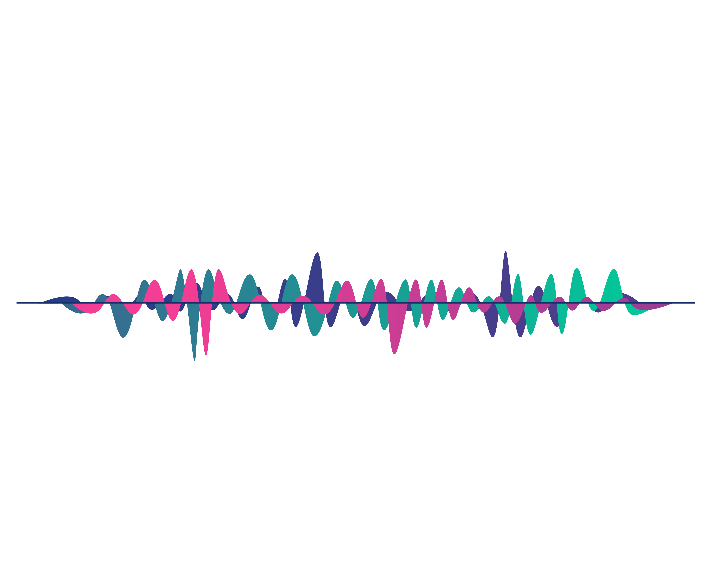

Hi
Ich bin Philip
Machine Learning Engineer
B.Sc Künstliche Intelligenz
Viel Spaß mit meinen Projekten!
Snowcast Showdown
One of my first AI-projects was the snowcast showdown challenge hosted by drivendata.org. The goal of this challenge was to estimate snow water equivalent (SWE) at a high spatiotemporal resolution over the Western U.S. using near real-time data sources. Getting better SWE estimates for mountain watersheds and headwater catchments helps to improve runoff and water supply forecasts, which in turn helps reservoir operators manage limited water supplies. Improved SWE information also helps water managers respond to extreme weather events such as floods and droughts. The model architecture was implemented with tensorflow but the main challenge was to acquire and preprocess the satellite data. Landscape Png vectors by Lovepik.com

Speech Emotion Recognition
In this project I approached the challenges of Speech Emotion Recognition (SER) by comparing different models that I implemented with pytorch. Humans have evolved various forms of communication like speech, facial expressions, gestures or body postures, with speech being one of the fastest and most natural ones. Automatic Speech Recogntion (ASR) systems try to recognize the message of the given speech by converting it into text. This research field was able to benefit a lot from the latest rising era of deep learning and achieved astonishing results that have found their way into millions of homes or pockets with products like Amazon Alexa or Apple Siri. SER tries to recognize different emotional states from speech. This research area was not able to achieve comparable results despite the developments in deep learning. Some of the reasons for this are the lack of expository emotional speech data, resulting from the subjectivity in annotating data, the comparably strong effort that is needed for creating emotional speech or the challenge of combining the most fitting speech features for SER-models.
Cancer Cell Detection
The goal of the challenge is to use a dataset consisting of three labeled images to recognize different cell classes and to localize them in the image. One of the main problems here is the extremely small dataset. To counteract this problem, we cut the images of the dataset into crops of the same size, thus increasing the size of the dataset by a multiple. The approach we took is as follows: using a U-Net segmentation model, we segmented the different classes in the images. We then used these segmentation masks to compute bounding boxes.
Want to see all projects?
Jan
Feb
Mar
Apr
May
Jun
Jul
Agu
Sep
Oct
Nov
Dec